C → G
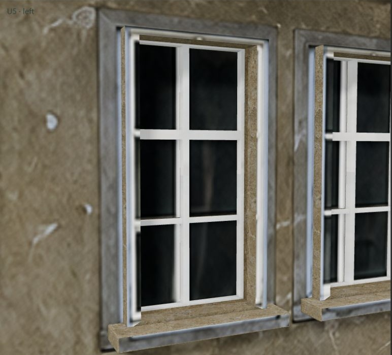
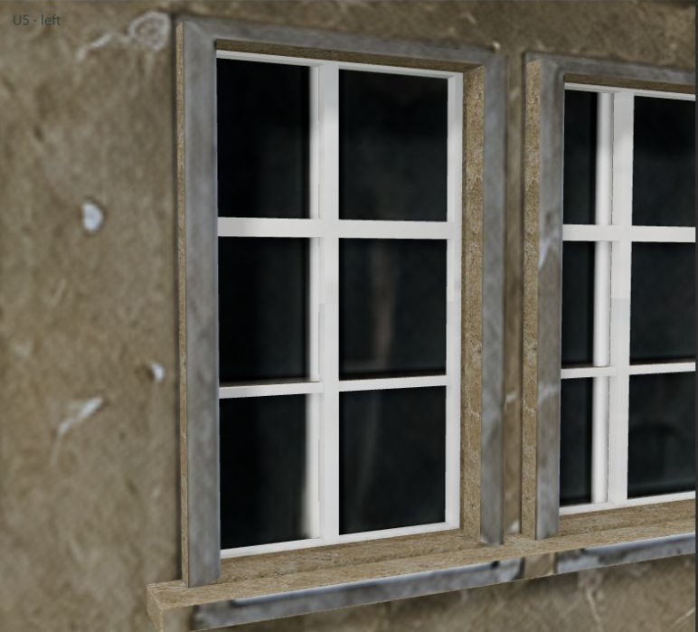
Načítání…
G: polohy a šířky otvorů, rámů, skel a parapetů upravené podle hran fotografické textury. Textura fasády beze změny. / Geometry aligned with the facade texture; original texture retained.
T: původní geometrie C a maskovaný inpainting zdvojených částí rámů na čelní textuře. Mimo masku je obraz pixelově totožný. / Original C geometry, masked inpainting of duplicate frame fragments; pixels outside the mask are identical.
U1/U2 jsou dvě horní levá kontrolní okna, ponechaná beze změny. U1–U6: horní řada zleva; G1–G4: spodní okna zleva; D1: dveře. Každý otvor má čelní, levý a pravý detail. / U1/U2 are unchanged controls. U1–U6 upper row, G1–G4 lower row, D1 door; each has front/left/right views.
Rozměry jsou pracovní registrací odvozeného FRONTu, nikoli zaměřením historické stavby. / Dimensions are provisional registration estimates, not a historical survey.
Vlevo původní C; vpravo G nebo T. / Original C on the left; G or T on the right.


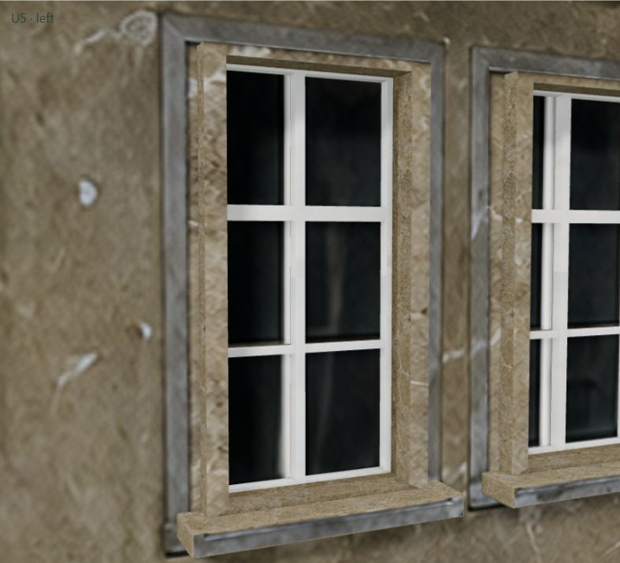
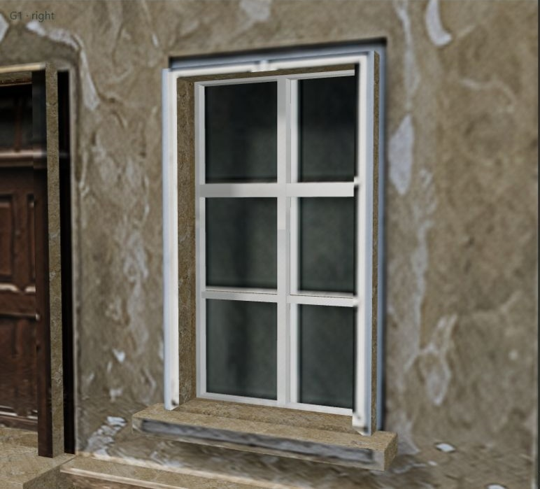
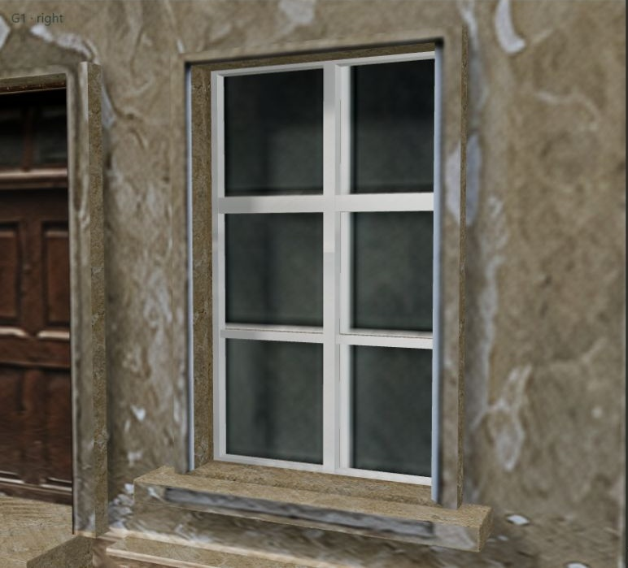
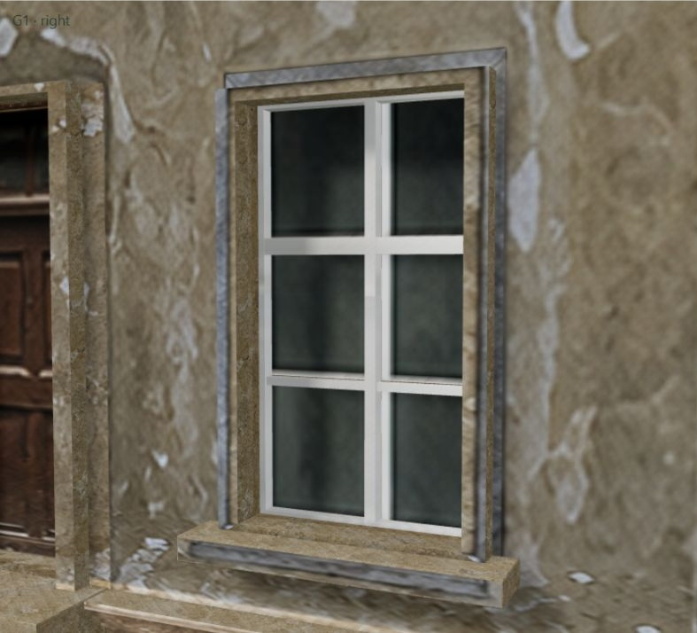
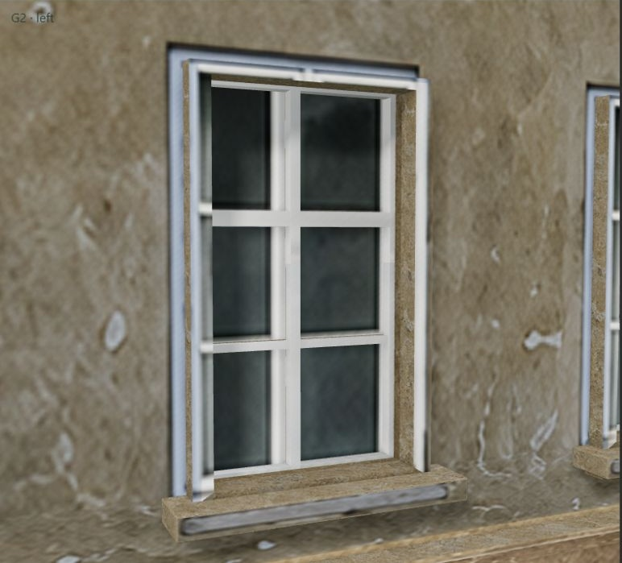
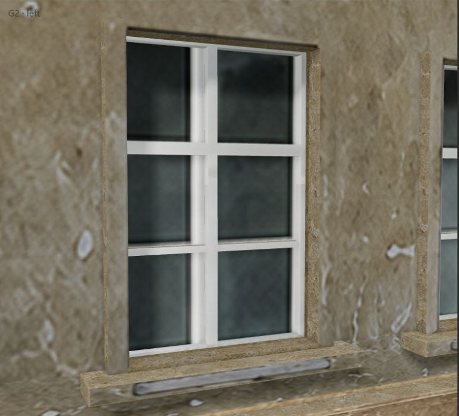
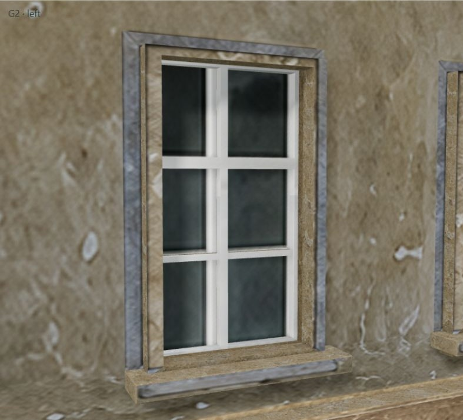
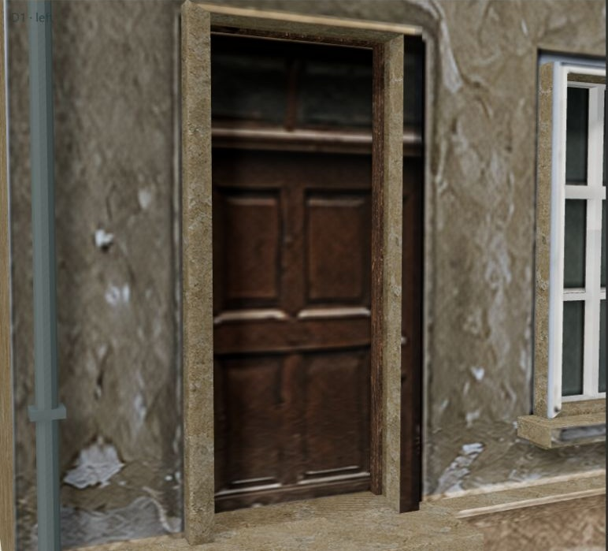
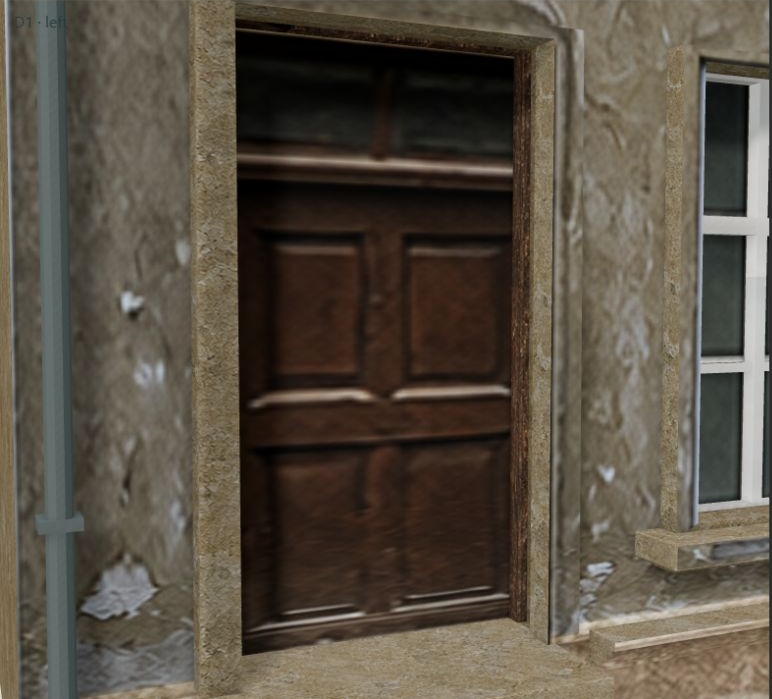
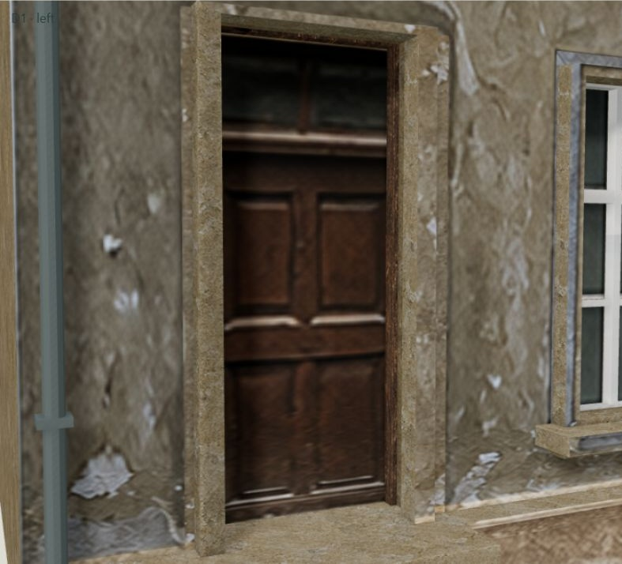
Doporučený směr: G. Výběr zůstává otevřený; hlavní v10 ani původní C se nemění. / Suggested direction: G. Selection remains open; main v10 and original C are unchanged.